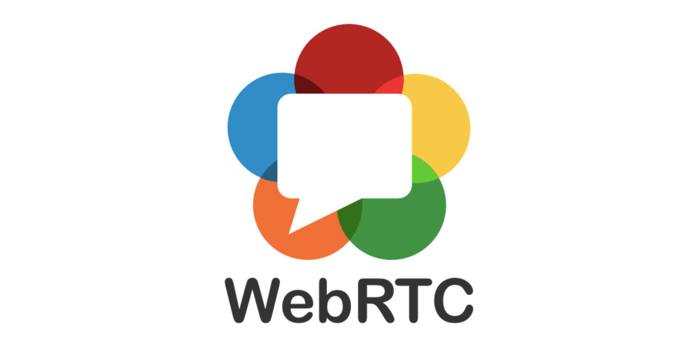
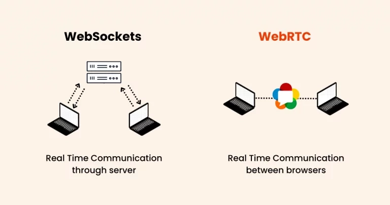

1. Introduction
WebRTC (Web Real-Time Communication) est une technologie qui permet aux navigateurs et aux applications mobiles de communiquer directement entre eux en temps réel, sans avoir besoin de serveurs intermédiaires. Il permet de passer des appels vidéo, envoyer de l’audio, partager des fichiers et même diffuser son écran, le tout de manière fluide et sécurisée.
Avec WebRTC, plus besoin d’installer de logiciels comme Zoom, Skype ou WhatsApp pour communiquer : tout se fait directement dans le navigateur !
2. Comment fonctionne WebRTC ?

WebRTC repose sur trois composants clés :
- Capture des médias : WebRTC permet d’accéder au microphone, à la caméra et à l’écran d’un appareil.
- Échange de données en P2P (Peer-to-Peer) : La communication se fait directement entre deux appareils sans passer par un serveur central.
- Signalisation et connexion : WebRTC utilise un serveur de signalisation pour établir la connexion entre les utilisateurs avant que la communication ne devienne directe.
3. À quoi sert WebRTC ?
- Appels vidéo et audio : Utilisé par Google Meet, Messenger et WhatsApp.
- Partage d’écran : Présentations en ligne et assistance à distance.
- Jeux en ligne avec chat vocal : Communication entre joueurs en temps réel.
- Transfert de fichiers : Partage direct sans passer par un serveur cloud.
- Télémédecine : Consultation à distance entre patients et médecins.
4. Comment utiliser WebRTC ? (Exemple simple en JavaScript)

Explication du code :
navigator.mediaDevices.getUserMedia({ video: true, audio: true }): Demande l'accès à la caméra et au micro.document.getElementById('video').srcObject = stream;: Affiche le flux vidéo en direct sur la page.- Si l'accès est refusé (l'utilisateur bloque la caméra), une erreur s'affiche dans la console.
5. Avantages et inconvénients de WebRTC
Avantages
- ✔ Gratuit et open-source
- ✔ Connexion rapide et directe
- ✔ Sécurité renforcée avec chiffrement automatique
- ✔ Compatible avec Chrome, Firefox, Edge, Safari
- ✔ Pas besoin d'installation
Inconvénients
- ✗ Dépend de la qualité de connexion Internet
- ✗ Certains navigateurs anciens ne le supportent pas
- ✗ Nécessite un serveur pour la signalisation initiale
6. WebRTC et l’avenir de la communication en ligne
WebRTC révolutionne les communications en ligne en proposant une alternative aux logiciels classiques. L’avenir de WebRTC inclut :
- Amélioration des codecs pour une meilleure qualité vidéo et audio.
- Gestion avancée du réseau pour éviter les interruptions.
- Intégration avec l’IA pour la traduction et la réduction du bruit.
7. Ressources pour aller plus loin
8. Conclusion
WebRTC est une technologie puissante qui permet la communication vidéo, audio et le partage de fichiers directement dans le navigateur, sans logiciel supplémentaire. Son efficacité, rapidité et sécurité en font une solution incontournable pour l’avenir des applications web.